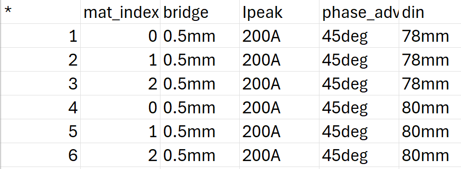

Download this example
Download this example as a Jupyter Notebook or as a Python script.
IPM geometry optimization#
This example shows how to use PyAEDT to find the best machine 2D geometry to achieve high torque and low losses. The example shows how to setup an optimetrics analysis to sweep geometries for a single value of stator current angle and a varying material for the magnets. The torque and losses results are then exported in a .csv file.
Keywords: Maxwell 2D, transient, motor, optimization.
Perform imports and define constants#
Perform required imports.
[1]:
import csv
import os
import tempfile
import time
import ansys.aedt.core
from ansys.aedt.core.examples.downloads import download_file
Define constants.
[2]:
AEDT_VERSION = "2025.2"
NUM_CORES = 4
NG_MODE = False # Open AEDT UI when it is launched.
Create temporary directory and download files#
Create a temporary directory where downloaded data or dumped data can be stored. If you’d like to retrieve the project data for subsequent use, the temporary folder name is given by temp_folder.name.
[3]:
temp_folder = tempfile.TemporaryDirectory(suffix=".ansys")
Download AEDT file example#
Set the local temporary folder to export the AEDT file to.
[4]:
aedt_file = download_file(
source="maxwell_motor_optimization",
name="IPM_optimization.aedt",
local_path=temp_folder.name,
)
Launch Maxwell 2D#
Launch AEDT and Maxwell 2D after first setting up the project, the version and the graphical mode.
[5]:
m2d = ansys.aedt.core.Maxwell2d(
project=aedt_file,
version=AEDT_VERSION,
new_desktop=True,
non_graphical=NG_MODE,
)
PyAEDT INFO: Parsing C:\Users\ansys\AppData\Local\Temp\tmpg0im63te.ansys\maxwell_motor_optimization\IPM_optimization.aedt.
PyAEDT INFO: Python version 3.10.11 (tags/v3.10.11:7d4cc5a, Apr 5 2023, 00:38:17) [MSC v.1929 64 bit (AMD64)].
PyAEDT INFO: PyAEDT version 0.25.dev0.
PyAEDT INFO: Initializing new Desktop session.
PyAEDT INFO: Log on console is enabled.
PyAEDT INFO: Log on file C:\Users\ansys\AppData\Local\Temp\pyaedt_ansys_9c7f99a8-1cca-4f76-9135-24c1bbf5eec2.log is enabled.
PyAEDT INFO: Log on AEDT is disabled.
PyAEDT INFO: Starting new AEDT gRPC session.
PyAEDT INFO: AEDT installation Path C:\Program Files\ANSYS Inc\v252\AnsysEM
PyAEDT INFO: Client application successfully started.
PyAEDT INFO: New AEDT gRPC session session started on port 50051.
PyAEDT INFO: File C:\Users\ansys\AppData\Local\Temp\tmpg0im63te.ansys\maxwell_motor_optimization\IPM_optimization.aedt correctly loaded. Elapsed time: 0m 10sec
PyAEDT INFO: 2025.2 version started with process ID 6072.
PyAEDT WARNING: Service Pack is not detected. PyAEDT is currently connecting in Insecure Mode.
PyAEDT WARNING: Please download and install latest Service Pack to use connect to AEDT in Secure Mode.
PyAEDT INFO: Debug logger is disabled. PyAEDT methods will not be logged.
PyAEDT INFO: Project IPM_optimization has been opened.
PyAEDT INFO: Active Design set to M2D_Transient
PyAEDT INFO: Active Design set to M2D_Transient
PyAEDT INFO: Aedt Objects correctly read
Design variables#
Define the materials array to be used in the parametric sweep.
[6]:
m2d["mat_sweep"] = '["XG196/96_2DSF1.000_X", "NdFe30", "NdFe35"]'
m2d["mat_index"] = 0
Assign material array to magnets#
Get all magnets in the design that by default have the material "XG196/96_2DSF1.000_X" assigned. Assign the material array defined above to all magnets.
[7]:
magnets = m2d.modeler.get_objects_by_material("XG196/96_2DSF1.000_X")
PyAEDT INFO: Modeler2D class has been initialized!
PyAEDT INFO: Modeler class has been initialized! Elapsed time: 0m 1sec
PyAEDT INFO: Parsing design objects. This operation can take time
PyAEDT INFO: Refreshing bodies from Object Info
PyAEDT INFO: Bodies Info Refreshed Elapsed time: 0m 0sec
PyAEDT INFO: 3D Modeler objects parsed. Elapsed time: 0m 0sec
[8]:
for mag in magnets:
mag.material_name = "mat_sweep[mat_index]"
PyAEDT INFO: Materials class has been initialized! Elapsed time: 0m 0sec
Add parametric setup#
Add a parametric setup made up of geometry variable sweep definitions and single value for the stator current angle. Note: Step variations have been minimized to reduce the analysis time. If needed they can be increased by changing the step argument.
[9]:
param_sweep = m2d.parametrics.add(
variable="bridge",
start_point="0.5mm",
variation_type="SingleValue",
)
param_sweep.add_variation(
sweep_variable="din",
start_point=78,
end_point=80,
step=10,
units="mm",
variation_type="LinearStep",
)
param_sweep.add_variation(
sweep_variable="phase_advance",
start_point=45,
units="deg",
variation_type="SingleValue",
)
param_sweep.add_variation(
sweep_variable="Ipeak", start_point=200, units="A", variation_type="SingleValue"
)
[9]:
True
Add material variation to the parametric setup and sweep the index of the material array defined above.
[10]:
param_sweep.add_variation(
sweep_variable="mat_index",
start_point=0,
end_point=2,
step=1,
variation_type="LinearStep",
)
[10]:
True
Alternative way to add a parametric setup from file#
Suppose you have a .csv file with all the parameters to be swept defined in columns, such as:
#
You can add a parametric setup from that file using the add_from_file method:
[11]:
# param_sweep_from_file = m2d.parametrics.add_from_file(csv_file_path)
Analyze parametric sweep#
To speed up the analysis, the time step is increased in the transient setup. This can be done by modifying the TimeStep property of the transient setup. Note: In a real case scenario, the time step should be: 1/freq_e/360. To simulate a real case scenario, please comment out the following line.
[12]:
m2d.setups[0].props["TimeStep"] = "1/freq_e/45"
param_sweep.analyze(cores=NUM_CORES)
PyAEDT INFO: Project IPM_optimization Saved correctly
PyAEDT INFO: Key Desktop/ActiveDSOConfigurations/Maxwell 2D correctly changed.
PyAEDT INFO: Solving Optimetrics
PyAEDT INFO: Design setup Parametric_J2CSAM solved correctly in 0.0h 2.0m 2.0s
PyAEDT INFO: Key Desktop/ActiveDSOConfigurations/Maxwell 2D correctly changed.
[12]:
True
Post-processing#
Create reports to get torque and loss results for all variations. Create reports with all variations and with one variable at a time held constant. This helps to visualize the influence of each variable on the torque and losses. For the first torque report the din variable is held constant at 78mm.
[13]:
report_torque_din_costant = m2d.post.create_report(
expressions="Moving1.Torque",
domain="Sweep",
variations={
"bridge": "All",
"din": "78mm",
"Ipeak": "All",
"phase_advance": "All",
"mat_index": "All",
},
primary_sweep_variable="Time",
plot_type="Rectangular Plot",
plot_name="torque_din_costant",
)
PyAEDT INFO: Parsing C:\Users\ansys\AppData\Local\Temp\tmpg0im63te.ansys\maxwell_motor_optimization\IPM_optimization.aedt.
PyAEDT INFO: File C:\Users\ansys\AppData\Local\Temp\tmpg0im63te.ansys\maxwell_motor_optimization\IPM_optimization.aedt correctly loaded. Elapsed time: 0m 0sec
PyAEDT INFO: aedt file load time 0.18969416618347168
PyAEDT INFO: PostProcessor class has been initialized! Elapsed time: 0m 0sec
PyAEDT INFO: PostProcessor class has been initialized! Elapsed time: 0m 0sec
PyAEDT INFO: Post class has been initialized! Elapsed time: 0m 0sec
PyAEDT WARNING: No report category provided. Automatically identified Transient
The second torque report has the mat_index variable held constant at 0. In this case the material used for the magnets is "XG196/96_2DSF1.000_X".
[14]:
report_torque_mat_costant = m2d.post.create_report(
expressions="Moving1.Torque",
domain="Sweep",
variations={
"bridge": "All",
"din": "All",
"Ipeak": "All",
"phase_advance": "All",
"mat_index": "0",
},
primary_sweep_variable="Time",
plot_type="Rectangular Plot",
plot_name="torque_mat_costant",
)
PyAEDT WARNING: No report category provided. Automatically identified Transient
The same approach is used to create reports for solid and core losses.
[15]:
report_solid_loss_din_costant = m2d.post.create_report(
expressions="SolidLoss",
domain="Sweep",
variations={
"bridge": "All",
"din": "78mm",
"Ipeak": "All",
"phase_advance": "All",
"mat_index": "All",
},
primary_sweep_variable="Time",
plot_type="Rectangular Plot",
plot_name="solid_loss_din_costant",
)
PyAEDT WARNING: No report category provided. Automatically identified Transient
[16]:
report_solid_loss_mat_costant = m2d.post.create_report(
expressions="SolidLoss",
domain="Sweep",
variations={
"bridge": "All",
"din": "All",
"Ipeak": "All",
"phase_advance": "All",
"mat_index": "0",
},
primary_sweep_variable="Time",
plot_type="Rectangular Plot",
plot_name="solid_loss_mat_costant",
)
PyAEDT WARNING: No report category provided. Automatically identified Transient
[17]:
report_core_loss_din_costant = m2d.post.create_report(
expressions="CoreLoss",
domain="Sweep",
variations={
"bridge": "All",
"din": "78mm",
"Ipeak": "All",
"phase_advance": "All",
"mat_index": "All",
},
primary_sweep_variable="Time",
plot_type="Rectangular Plot",
plot_name="core_loss_din_costant",
)
PyAEDT WARNING: No report category provided. Automatically identified Transient
[18]:
report_core_loss_mat_costant = m2d.post.create_report(
expressions="CoreLoss",
domain="Sweep",
variations={
"bridge": "All",
"din": "All",
"Ipeak": "All",
"phase_advance": "All",
"mat_index": "0",
},
primary_sweep_variable="Time",
plot_type="Rectangular Plot",
plot_name="core_loss_mat_costant",
)
PyAEDT WARNING: No report category provided. Automatically identified Transient
Get torque and loss solution data for all variations.
[19]:
torque_data = m2d.post.get_solution_data(
expressions=["Moving1.Torque"],
setup_sweep_name=m2d.nominal_sweep,
domain="Sweep",
variations={
"bridge": "All",
"din": "All",
"Ipeak": "All",
"phase_advance": "All",
"mat_index": "All",
},
primary_sweep_variable="Time",
report_category="Standard",
)
PyAEDT INFO: Solution Data Correctly Loaded.
Time to initialize solution data:0.04759359359741211
Time to initialize solution data:0.06629467010498047
[20]:
solid_loss_data = m2d.post.get_solution_data(
expressions=["SolidLoss"],
setup_sweep_name=m2d.nominal_sweep,
domain="Sweep",
variations={
"bridge": "All",
"din": "All",
"Ipeak": "All",
"phase_advance": "All",
"mat_index": "All",
},
primary_sweep_variable="Time",
report_category="Standard",
)
PyAEDT INFO: Solution Data Correctly Loaded.
Time to initialize solution data:0.04347348213195801
Time to initialize solution data:0.059418678283691406
[21]:
core_loss_data = m2d.post.get_solution_data(
expressions=["CoreLoss"],
setup_sweep_name=m2d.nominal_sweep,
domain="Sweep",
variations={
"bridge": "All",
"din": "All",
"Ipeak": "All",
"phase_advance": "All",
"mat_index": "All",
},
primary_sweep_variable="Time",
report_category="Standard",
)
PyAEDT INFO: Solution Data Correctly Loaded.
Time to initialize solution data:0.038259029388427734
Time to initialize solution data:0.05423927307128906
Calculate torque and loss average values for each variation and write data in a .csv file.
[22]:
csv_data = []
for var in core_loss_data.variations:
torque_data.active_variation = var
core_loss_data.active_variation = var
solid_loss_data.active_variation = var
torque_values = torque_data.get_expression_data(formula="magnitude")[1]
core_loss_values = core_loss_data.get_expression_data(formula="magnitude")[1]
solid_loss_values = solid_loss_data.get_expression_data(formula="magnitude")[1]
torque_data_average = sum(torque_values) / len(torque_values)
core_loss_average = sum(core_loss_values) / len(core_loss_values)
solid_loss_average = sum(solid_loss_values) / len(solid_loss_values)
csv_data.append(
{
"active_variation": str(torque_data.active_variation),
"average_torque": str(torque_data_average),
"average_core_loss": str(core_loss_average),
"average_solid_loss": str(solid_loss_average),
}
)
with open(
os.path.join(temp_folder.name, "motor_optimization.csv"), "w", newline=""
) as csvfile:
fields = [
"active_variation",
"average_torque",
"average_core_loss",
"average_solid_loss",
]
writer = csv.DictWriter(csvfile, fieldnames=fields)
writer.writeheader()
writer.writerows(csv_data)
Release AEDT#
[23]:
m2d.save_project()
m2d.release_desktop()
# Wait 3 seconds to allow AEDT to shut down before cleaning the temporary directory.
time.sleep(3)
PyAEDT INFO: Project IPM_optimization Saved correctly
PyAEDT INFO: Desktop has been released and closed.
Clean up#
All project files are saved in the folder temp_folder.name. If you’ve run this example as a Jupyter notebook, you can retrieve those project files. The following cell removes all temporary files, including the project folder.
[24]:
temp_folder.cleanup()
Download this example
Download this example as a Jupyter Notebook or as a Python script.